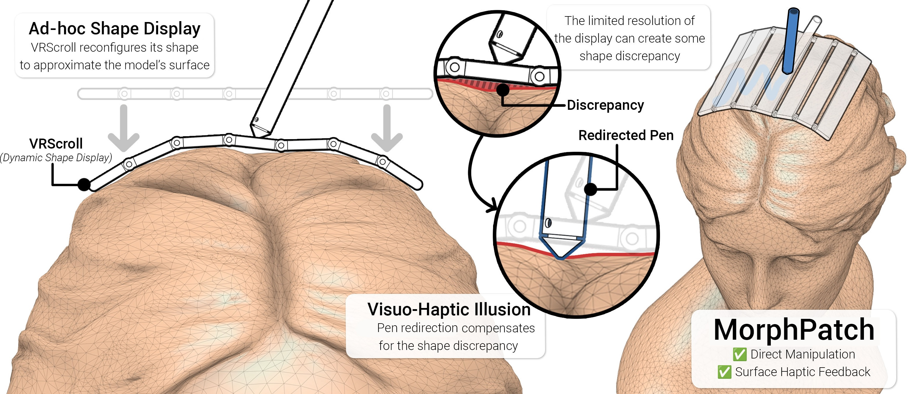
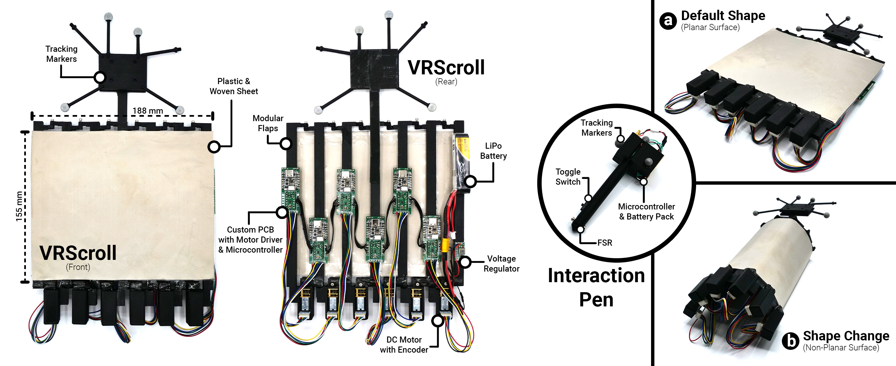
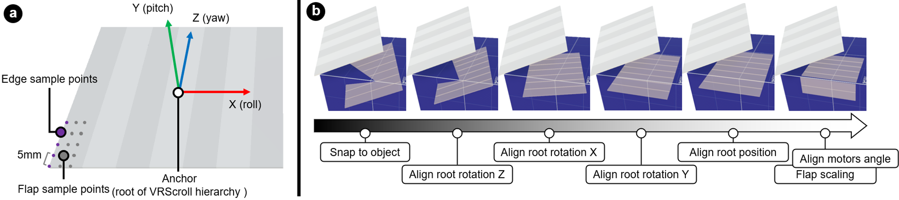
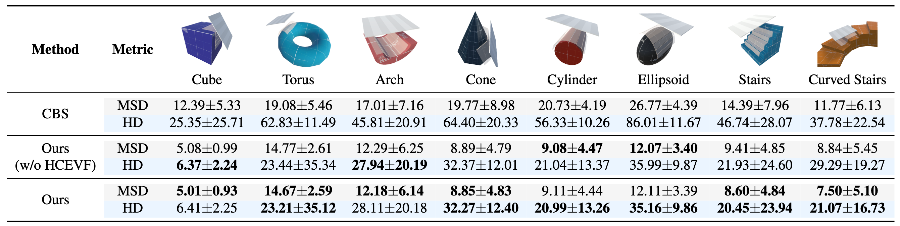
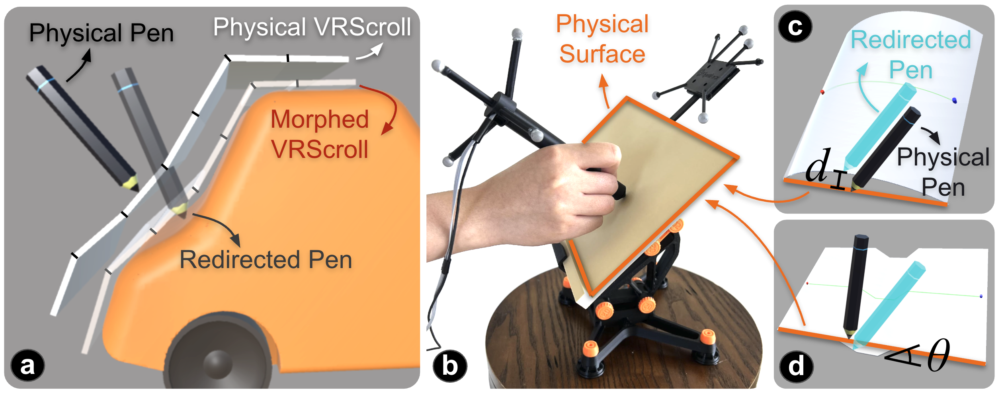
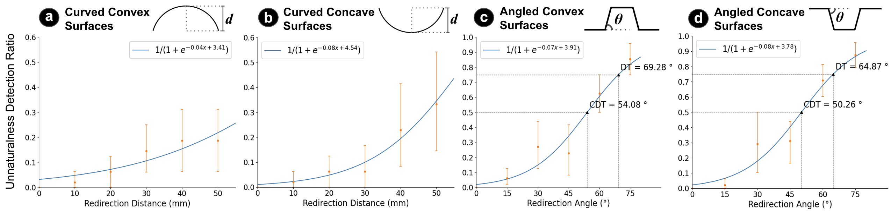
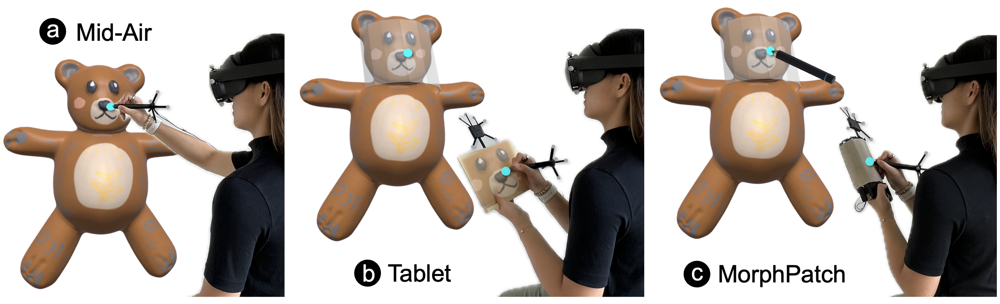
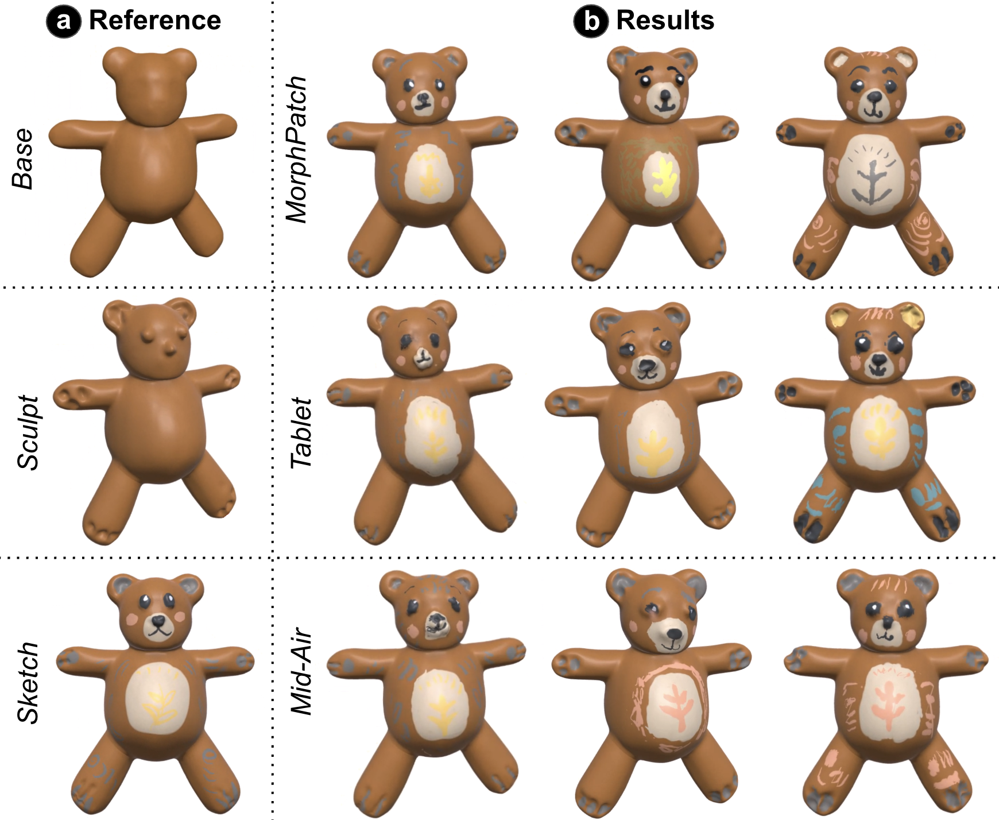
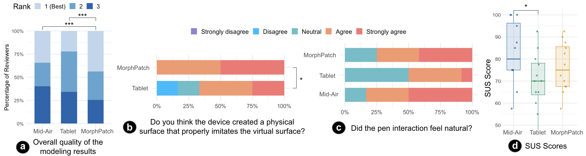

MorphPatch combines a dynamic shape display with visuo-haptic pen redirection, enabling users to interact as if they were directly touching a virtual object surface.
Abstract
On-surface interaction in Virtual Reality improves input performance through physical support and tactile feedback, but current shape displays are constrained by limited resolution. This can misalign physical and virtual surfaces, degrading usability and user experience.
We present MorphPatch, a system that enables real-time alignment between a dynamic shape display and virtual surfaces. MorphPatch uses a Signed Distance Field-based surface approximation pipeline to find practical alignments for diverse geometries.
For residual discrepancies, MorphPatch incorporates pen redirection with visuo-haptic illusion to perceptually compensate for misalignment. Three evaluations show improved geometric alignment, tolerable redirection thresholds, and better control, surface guidance, and modeling results over mid-air and tablet-like interaction.
Video
MorphPatch System
MorphPatch supports on-surface interaction with diverse virtual objects using a low-resolution, kinematically constrained shape-changing device. The system combines VRScroll hardware, real-time surface approximation, and visuo-haptic pen redirection.
VRScroll Hardware
VRScroll provides a morphable physical proxy for virtual surfaces.

Surface Approximation
Surface approximation aligns the proxy with local virtual geometry in real time.

We evaluated surface approximation on 8 target geometries using Mean Surface Distance (MSD) and Hausdorff Distance (HD). MorphPatch generally reduced approximation error compared with the collision-based simulation baseline, with the largest benefit on complex shapes such as stairs and curved stairs.

Technical evaluation results of surface approximation. MSD: Mean Surface Distance, HD: Hausdorff Distance. Units are in millimeters.
Pen Redirection
Pen redirection maps physical pen contact on VRScroll to the target virtual surface to compensate for residual shape mismatch.

The perceptual studies measured when users noticed positional and rotational redirection while tracing curved and angled virtual surfaces.

Results identified detection thresholds (DT) for pen redirection, helping MorphPatch preserve a natural pen-on-surface experience:
- Positional redirection: up to 50 mm (maximum tested; below DT)
- Rotational redirection: up to 64.87° (DT for concave angled surfaces)
Study Highlights
In the final comparative user study, participants used MorphPatch, Mid-Air, and Tablet interaction to sculpt and sketch a toy bear with non-planar surfaces.

Creative Task Results
MorphPatch supported stronger curved-surface guidance and helped participants reproduce the reference model more closely. It achieved the highest DINO similarity to the reference model, with a median score of 0.7154, and reviewers ranked MorphPatch results best overall.

Participants rated MorphPatch highly for surface reproduction and valued the realism and control provided by the physical surface approximation and pen redirection.

Takeaways
- MorphPatch shows that perfect physical replication is not required for useful on-surface VR interaction. A practical surface approximation from a shape display, combined with visuo-haptic pen redirection, can provide enough physical guidance for precise creative work.
- Visuo-haptic pen redirection can compensate for residual mismatch left after surface approximation. Our perceptual study found detection thresholds of up to 50 mm for positional redirection and 64.87° for rotational redirection on concave angled surfaces, preserving a natural pen-on-surface experience despite imperfect physical replication.
- The comparative study clarifies trade-offs between interaction modalities: Mid-Air interaction is flexible but tiring and less stable, Tablet interaction is familiar but flat, and MorphPatch provides curved-surface realism with stronger physical guidance.
Citation
BibTeX@article{ying2026morphpatch,
title = {MorphPatch: Enhancing VR Interaction on Shape Displays using Surface Approximation and Visuo-Haptic Illusions},
author = {Ying, Wen and Kim, KyeongMin and Rahman, Adil and Seon, JaeYoung and Kang, HyeongYeop and Heo, Seongkook},
journal = {arXiv preprint},
year = {2026},
keywords = {On-surface interactions, dynamic shape display, visuo-haptic illusion, virtual reality}
}